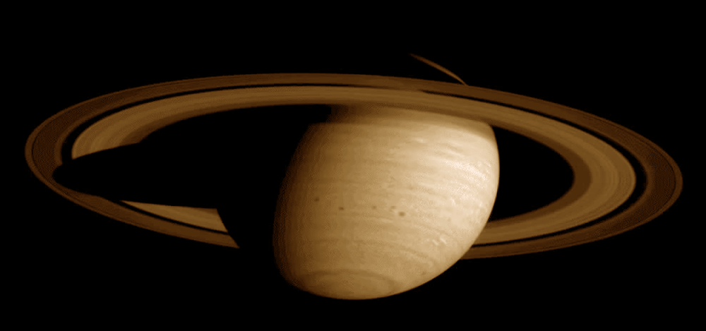
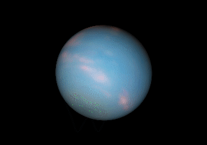

Mercurio
Diâmetro equatorial 4 879,4 km
Temperatura média: 166,85 ºC
mínima: -183,15 ºC
máxima: 426,85 ºC
Número de Satélites Nenhu
Período orbital 87,969 dias

Venus
Diâmetro médio 12 103,6 km
Temperatura média: 461 ºC
Número de Satélites Nenhum
Período orbital 224,701 dias

Terra
Diâmetro equatorial 12 756,2 km
Temperatura média: 14 ºC
mínima: -93,2 ºC
máxima: 57,8 ºC
Número de Satélites 1 (Lua)
Período orbital 365,256363004 dias

Marte
Diâmetro equatorial 6792,4 km
Temperatura média: −63 ºC
mínima: −143 ºC
máxima: 35 ºC
Número de Satélites 2 (Fobos e Deimos)
Período orbital 686,971 dias

Jupiter
Diâmetro equatorial 142 984 ± 8 km
Temperatura -108 ºC
Número de Satélites 79
Período orbital 4 331,572 dias

Diâmetro equatorial 120 536 km
Temperatura média: -139 ºC
Número de Satélites 82 com designações formais
Período orbital 10 759,22 dias
Saturno
Diâmetro equatorial 120 536 km
Temperatura média: -139 ºC
Número de Satélites 82 com designações formais
Período orbital 10 759,22 dias

Diâmetro equatorial 4,007 Terras
Temperatura média: -220 ºC
mínima: -224 ºC
máxima: -216 ºC
Número de Satélites 27
Período orbital 30799,095 dias
Urano
Diâmetro equatorial 4,007 Terras
Temperatura média: -220 ºC
mínima: -224 ºC
máxima: -216 ºC
Número de Satélites 27
Período orbital 30799,095 dias

Netuno
Diâmetro equatorial 49 528 km
Temperatura média: −201,15 ºC
mínima: −221,3 ºC
Número de Satélites 14
Período orbital 60 190,03 dias